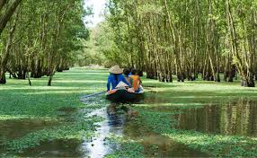

The Emerald Labyrinth: Sailing the Sunken Forest
Here, time doesn't tick—it floats. Imagine gliding silently over a thick carpet of water-fern, surrounded by a sunken forest where the trees rise like towering green pillars. This is total immersion in the Mekong Delta (Vietnam), a place where the water is the main road. Sitting in our small canoe, expertly guided by a fisherman in his traditional conical hat, I felt a peace that was almost unreal. The narrow, reflective channel twists its way between the trunks, offering a new sense of discovery with every bend. The sunlight filters through the dense canopy, creating spectacular patterns of light and shadow. This is an essential experience for anyone seeking the true Soul of Southeast Asia, far from the noise of the city. It's not just a boat ride; it's a deep connection with nature. Put away your map, let the current guide you, and come get lost in this emerald green labyrinth.
Torna a gli articoli